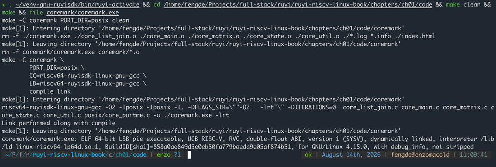
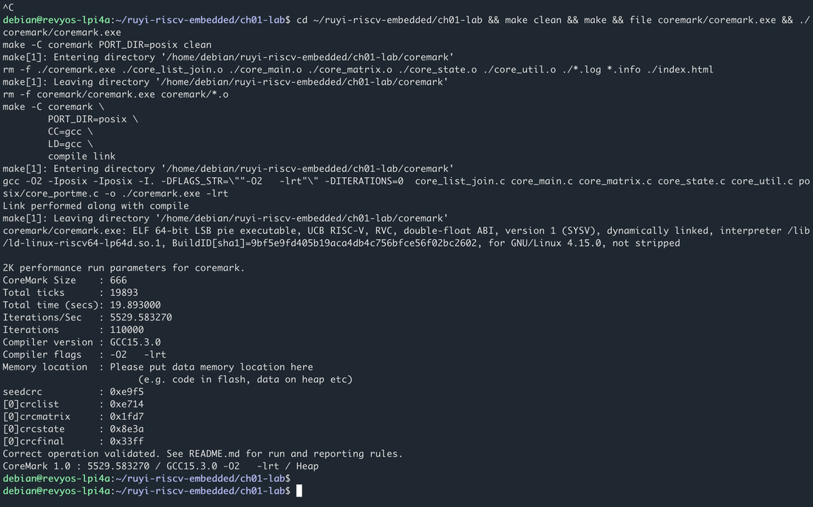

第一章 · 环境与工具链
装上如意 SDK，交叉编译上板跑分
RuyiSDK 从这一章立起招牌：§1.1 把它装进工具链，后面每章的代码都靠它交叉编译。
- 认识荔枝派 4A，烧录 RevyOS，打通 SSH 与文件传输。
- 入口
. ~/venv-gnu-ruyisdk/bin/ruyi-activate - 三元组钉死
riscv64-ruyisdk-linux-gnu - 编 CoreMark：
file认 RISC-V，上板跑出分数。
本章实验
同一份源码：x86 上交叉编译验收，板上用本机 gcc 再跑一遍。

file 看到 RISC-V
make，跑出 CoreMark 分数